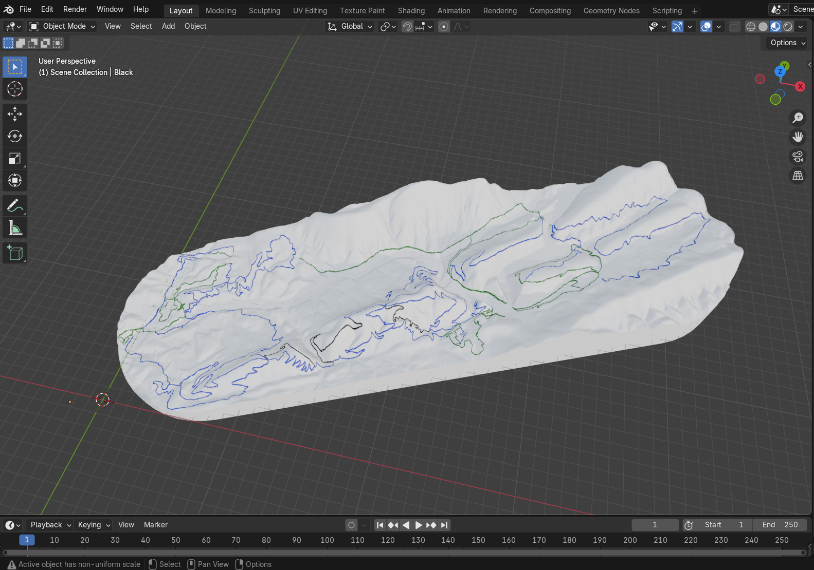

Monte
3D-Printed Topographic Trail Maps
Premium DTC brand for physical 3D trail maps - interactive Three.js previews, a proprietary GIS-to-STL pipeline, and a full Next.js storefront at monte3d.com.

Technical Platform
From elevation data to interactive preview to shipped physical map
The Problem
2D maps can't show undistorted terrain. Selling physical 3D maps at scale meant automating geospatial processing, giving buyers a live preview, and removing manual QGIS work per order.
What I Built
Full e-commerce site on Next.js 14, TypeScript, Tailwind, and Three.js / react-three-fiber. Interactive terrain previews use real OpenTopography elevation data, with a pre-generation cache for U.S. resorts.
Upstream GIS pipeline parses a 395MB OpenSkiMap GeoPackage (custom WKB geometry parser), automated with headless Python (geopandas/GDAL). Blender / TrailPrint3D then produces print-ready STL files. Branding targets a premium DTC look - cool fog-gray palette.

Three.js resort preview from real elevation and trail data.

Proprietary Blender / TrailPrint3D workflow from GIS data to STL.
Stack
Foundation
Pre-Monte validation the platform is built on
Origin Traction
Before the Monte rebrand and platform rebuild, the venture secured a provisional patent on the 3D topographic process, generated four-figure revenue, and partnered with Visit Hot Springs and Arkansas NICA - validating demand before the full e-commerce and data stack.
Operating since 2021; now scaled through software-defined manufacturing at monte3d.com.
Highlights
What Monte Is Now
Full-Stack Platform
Next.js storefront, live elevation previews, automated GIS-to-STL production
Live DTC Channel
Premium storefront shipping maps worldwide from monte3d.com
Print-Ready Pipeline
Headless GIS + Blender workflow replacing manual per-order modeling